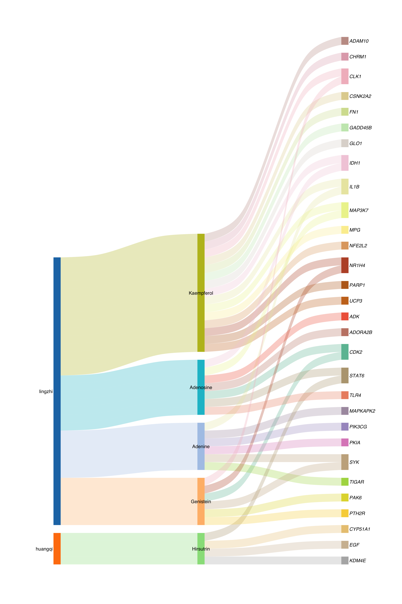
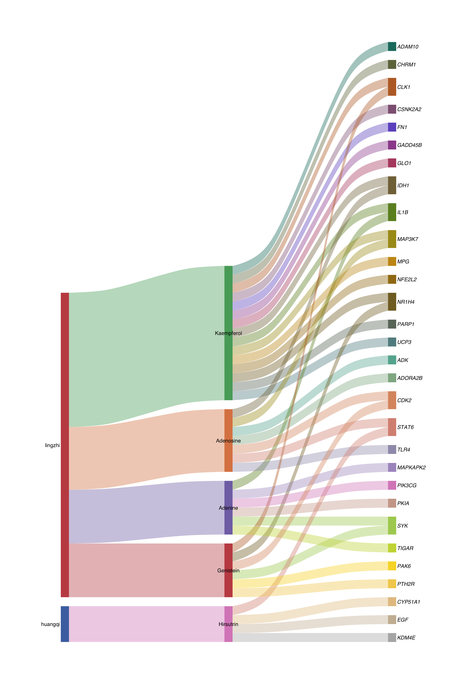
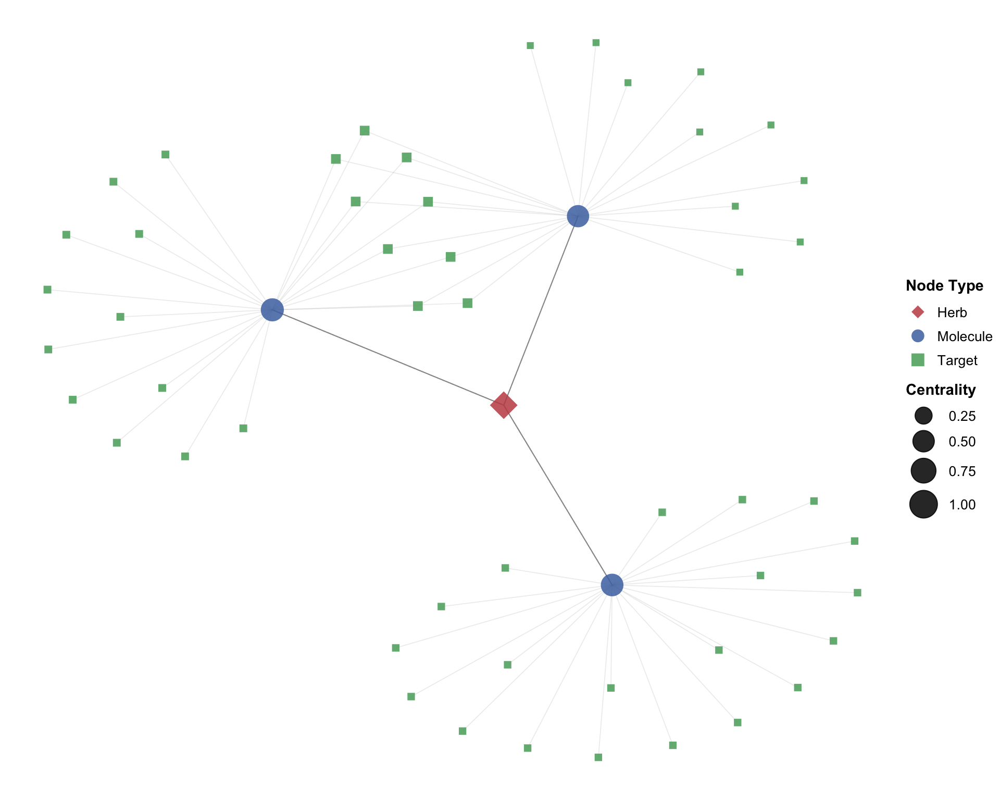
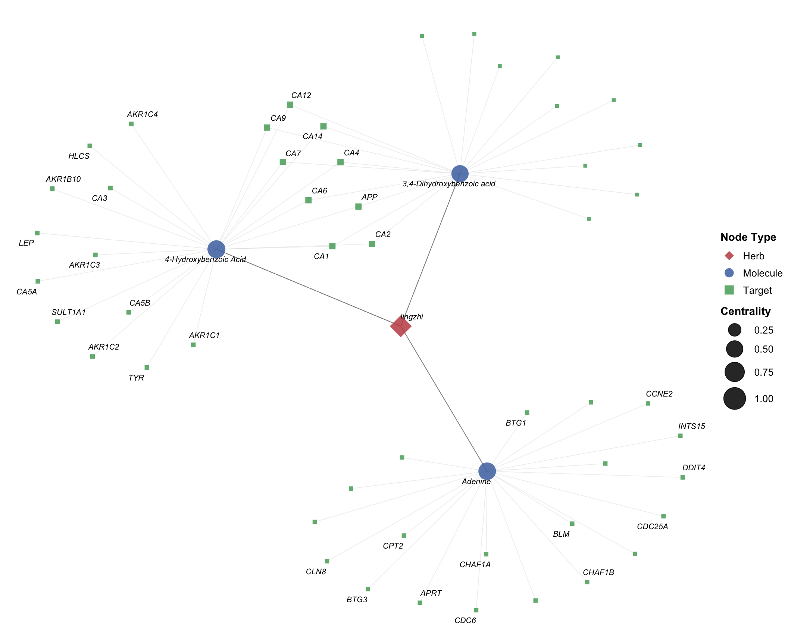
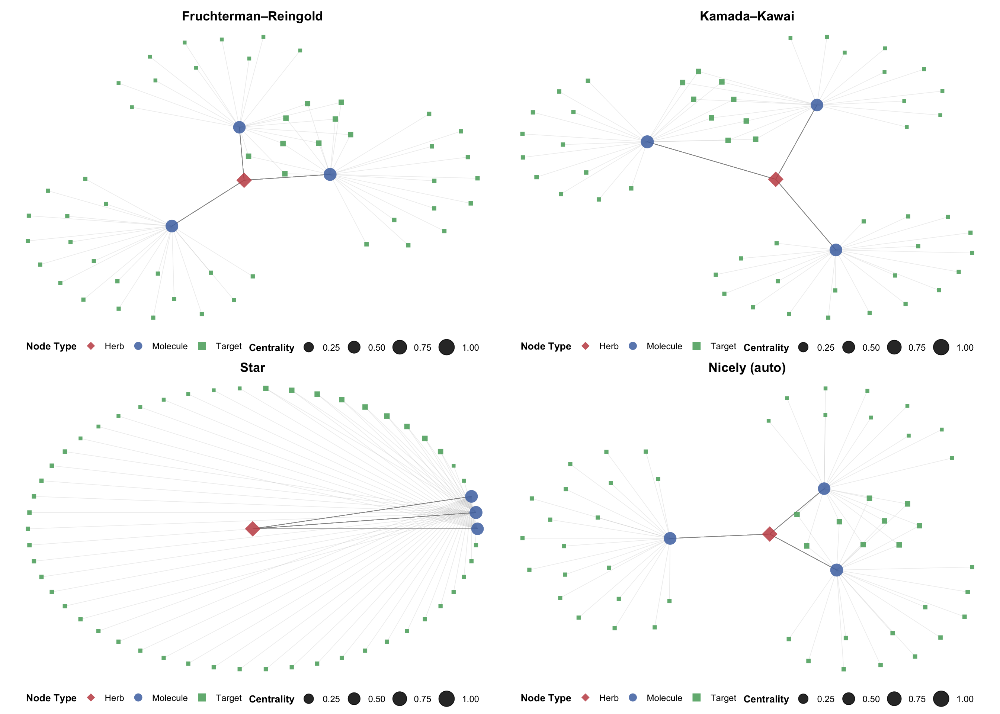
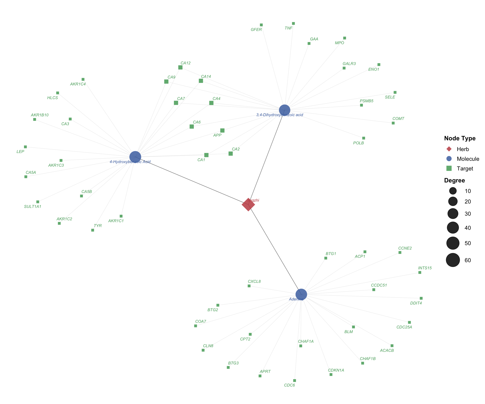

Chapter 5 TCM network construction
A core objective of network pharmacology is to reveal the multi-component, multi-target therapeutic mechanism of Traditional Chinese Medicine through network visualization. TCMDATA provides two complementary approaches for constructing and visualizing herb–molecule–target relationship networks: Sankey diagrams via ggalluvial[1] for depicting the directional flow of interactions, and force-directed network graphs via ggtangle[2] for revealing topological structure and hub nodes.
5.1 Preparing the data
All network visualizations start from the herb–molecule–target data frame returned by search_herb() or search_target().
library(TCMDATA)
library(dplyr)
# Query herbs and their molecular targets
herbs <- c("灵芝", "黄芪")
df <- search_herb(herb = herbs, type = "Herb_cn_name")
df |> head(10)#> herb molecule target
#> 1 lingzhi 3,4-Dihydroxybenzoic acid GAA
#> 2 lingzhi 3,4-Dihydroxybenzoic acid POLB
#> 3 lingzhi 3,4-Dihydroxybenzoic acid APP
#> 4 lingzhi 3,4-Dihydroxybenzoic acid CA1
#> 5 lingzhi 3,4-Dihydroxybenzoic acid CA12
#> 6 lingzhi 3,4-Dihydroxybenzoic acid CA14
#> 7 lingzhi 3,4-Dihydroxybenzoic acid CA2
#> 8 lingzhi 3,4-Dihydroxybenzoic acid CA4
#> 9 lingzhi 3,4-Dihydroxybenzoic acid CA6
#> 10 lingzhi 3,4-Dihydroxybenzoic acid CA7The returned data frame contains three core columns: herb, molecule, and target, representing the tripartite relationship.
5.2 Sankey diagram visualization
The Sankey diagram displays herb → molecule → target flows, with band width proportional to shared frequency. tcm_sankey() is powered by ggalluvial[1] and supports rich color customization.
5.2.1 Basic usage
library(ggplot2)
## prepare input data
top_mol <- df %>%
count(molecule, sort = TRUE) %>%
head(5) %>%
pull(molecule)
df_sub <- df %>% filter(molecule %in% top_mol)
set.seed(2026)
sampled_targets <- df_sub %>%
distinct(target) %>%
sample_n(min(30, n())) %>%
pull(target)
df_sankey <- df_sub %>% filter(target %in% sampled_targets)
p_sankey <- tcm_sankey(df_sankey)
print(p_sankey)
Each vertical band represents a stratum (herb, molecule, or target), and the colored flows trace the associations between them. Wider bands indicate higher interaction frequency.
5.2.2 Customizing colors and appearance
tcm_sankey() offers fine-grained control over color palettes, font style, flow transparency, and curvature. Below is an example with a publication-ready color scheme:
p_sankey2 <- tcm_sankey(
df_sankey,
herb_cols = c("#C44E52", "#4C72B0"),
mol_cols = c("#55A868", "#DD8452", "#8172B3", "#C44E52",
"#DA8BC3"),
target_cols = c("#1A7A6D", "#BF6D2A", "#6A5ACD", "#C04779",
"#5B8C2A", "#D4A017", "#8B6914", "#607D8B"),
font_size = 3.5,
alpha = 0.4,
knot.pos = 0.25
)
print(p_sankey2)
5.3 Network graph with ggtangle
While the Sankey diagram excels at showing flows, a force-directed network layout can reveal topological structure, hub nodes, and community patterns. prepare_herb_graph() builds an igraph object with pre-computed node metrics, and ggtangle[2] renders it as a ggplot-based network.
5.3.1 Building the graph
library(igraph)
# Build the network (using a moderate subset for clarity)
g <- prepare_herb_graph(df, n = 60, compute_metrics = TRUE)
# Inspect graph summary
cat("Nodes:", vcount(g), "\n")#> Nodes: 55#> Edges: 120#> Node types: Herb, Molecule, Targetprepare_herb_graph() automatically:
- Creates directed edges: Herb → Molecule → Target
- Computes per-node metrics:
degree,centrality(eigenvector),betweenness,closeness,pagerank - Assigns
typelabels ("Herb","Molecule","Target") to each node
5.3.2 Basic network visualization
ggtangle[2] extends ggplot2 to natively support igraph objects. You can use familiar aesthetics (color, size, shape) and layers (geom_point, geom_text_repel).
library(ggtangle)
library(ggrepel)
# Define a publication-quality color palette
node_colors <- c(
"Herb" = "#C44E52",
"Molecule" = "#4C72B0",
"Target" = "#55A868"
)
# Define node shape mapping
node_shapes <- c(
"Herb" = 18, # diamond
"Molecule" = 16, # filled circle
"Target" = 15 # filled square
)
set.seed(42)
p_net <- ggplot(g, layout = "kk") +
geom_edge(alpha = 0.18, color = "grey60", linewidth = 0.3) +
geom_point(aes(color = type, size = centrality, shape = type), alpha = 0.85) +
scale_color_manual(values = node_colors, name = "Node Type") +
scale_shape_manual(values = node_shapes, name = "Node Type") +
scale_size_continuous(name = "Centrality", range = c(2, 9)) +
guides(
color = guide_legend(order = 1, override.aes = list(size = 4)),
shape = guide_legend(order = 1),
size = guide_legend(order = 2)
) +
theme_void() +
theme(
legend.position = "right",
legend.text = element_text(size = 10),
legend.title = element_text(size = 11, face = "bold"),
plot.margin = margin(5, 5, 5, 5)
)
print(p_net)
In this plot:
- Diamond nodes (■) represent herbs, circles (●) represent molecules, and squares (■) represent targets.
- Larger nodes have higher eigenvector centrality, indicating greater topological importance.
- The Kamada-Kawai (
"kk") layout positions strongly connected nodes closer together.
5.3.3 Adding node labels
For networks with many nodes, ggrepel::geom_text_repel() prevents label overlap. Here we label only high-centrality nodes (top 50%):
set.seed(42)
# Extract centrality threshold (top 50%)
cent_thresh <- quantile(V(g)$centrality, 0.5)
p_labeled <- ggplot(g, layout = "kk") +
geom_edge(alpha = 0.15, color = "grey55", linewidth = 0.3) +
geom_point(aes(color = type, size = centrality, shape = type), alpha = 0.85) +
geom_text_repel(
aes(label = ifelse(centrality >= cent_thresh, name, "")),
size = 2.8, fontface = "italic",
max.overlaps = 30, segment.alpha = 0.3,
segment.size = 0.3, segment.color = "grey50",
box.padding = 0.4, point.padding = 0.3
) +
scale_color_manual(values = node_colors, name = "Node Type") +
scale_shape_manual(values = node_shapes, name = "Node Type") +
scale_size_continuous(name = "Centrality", range = c(1.5, 10)) +
guides(
color = guide_legend(order = 1, override.aes = list(size = 4)),
shape = guide_legend(order = 1),
size = guide_legend(order = 2)
) +
theme_void() +
theme(
legend.position = "right",
legend.text = element_text(size = 10),
legend.title = element_text(size = 11, face = "bold"),
plot.margin = margin(5, 5, 5, 5)
)
print(p_labeled)
5.3.4 Alternative layouts
ggtangle supports all igraph layout algorithms. Common choices include:
library(aplot)
set.seed(42)
base_layers <- list(
geom_edge(alpha = 0.15, color = "grey55", linewidth = 0.3),
geom_point(aes(color = type, size = centrality, shape = type), alpha = 0.85),
scale_color_manual(values = node_colors, name = "Node Type"),
scale_shape_manual(values = node_shapes, name = "Node Type"),
scale_size_continuous(name = "Centrality", range = c(1.5, 7)),
guides(
color = guide_legend(order = 1, override.aes = list(size = 3.5)),
shape = guide_legend(order = 1),
size = guide_legend(order = 2)
),
theme_void(),
theme(
plot.title = element_text(hjust = 0.5, face = "bold", size = 13),
legend.position = "bottom",
legend.text = element_text(size = 9),
legend.title = element_text(size = 10, face = "bold")
)
)
p_fr <- ggplot(g, layout = "fr") + base_layers + ggtitle("Fruchterman–Reingold")
p_kk <- ggplot(g, layout = "kk") + base_layers + ggtitle("Kamada–Kawai")
p_star <- ggplot(g, layout = "star") + base_layers + ggtitle("Star")
p_nicely <- ggplot(g, layout = "nicely") + base_layers + ggtitle("Nicely (auto)")
plot_list(p_fr, p_kk, p_star, p_nicely, ncol = 2)
5.3.5 Enriching the network with external data
Using the %<+% operator from ggfun, you can bind additional data to the network for richer visual encodings. Here, node size is mapped to degree (the number of direct interactions), and all node labels are displayed:
# Create a data frame with node-level metrics
node_df <- data.frame(
label = V(g)$name,
type = V(g)$type,
degree = V(g)$degree,
betweenness = V(g)$betweenness,
pagerank = V(g)$pagerank
)
set.seed(42)
p_enriched <- ggplot(g, layout = "kk") +
geom_edge(alpha = 0.15, color = "grey55", linewidth = 0.3) +
geom_point(aes(color = type, size = degree, shape = type), alpha = 0.85) +
geom_text_repel(
aes(label = name, color = type),
size = 2.5, fontface = "italic",
max.overlaps = 100, segment.alpha = 0.25,
segment.size = 0.2, segment.color = "grey60",
box.padding = 0.3, point.padding = 0.2,
show.legend = FALSE
) +
scale_color_manual(values = node_colors, name = "Node Type") +
scale_shape_manual(values = node_shapes, name = "Node Type") +
scale_size_continuous(name = "Degree", range = c(2, 11)) +
guides(
color = guide_legend(order = 1, override.aes = list(size = 4)),
shape = guide_legend(order = 1),
size = guide_legend(order = 2)
) +
theme_void() +
theme(
legend.position = "right",
legend.text = element_text(size = 10),
legend.title = element_text(size = 11, face = "bold"),
plot.margin = margin(10, 10, 10, 10)
)
print(p_enriched)
5.4 References
Brunson JC (2020). “ggalluvial: Layered Grammar for Alluvial Plots.” Journal of Open Source Software, 5(49), 2017. doi: 10.21105/joss.02017.
Yu G (2025). ggtangle: Draw Network with Data. R package version 0.1.1. doi: 10.32614/CRAN.package.ggtangle.
5.5 Session information
#> R version 4.5.0 (2025-04-11)
#> Platform: aarch64-apple-darwin20
#> Running under: macOS 26.2
#>
#> Matrix products: default
#> BLAS: /Library/Frameworks/R.framework/Versions/4.5-arm64/Resources/lib/libRblas.0.dylib
#> LAPACK: /Library/Frameworks/R.framework/Versions/4.5-arm64/Resources/lib/libRlapack.dylib; LAPACK version 3.12.1
#>
#> locale:
#> [1] zh_CN.UTF-8/zh_CN.UTF-8/zh_CN.UTF-8/C/zh_CN.UTF-8/zh_CN.UTF-8
#>
#> time zone: Asia/Shanghai
#> tzcode source: internal
#>
#> attached base packages:
#> [1] stats graphics grDevices utils datasets methods base
#>
#> other attached packages:
#> [1] aplot_0.2.9 ggrepel_0.9.7 ggtangle_0.0.7 igraph_2.2.2
#> [5] ggplot2_4.0.2 dplyr_1.2.0 aplotExtra_0.0.4 ivolcano_0.0.5
#> [9] enrichplot_1.28.4 TCMDATA_0.0.0.9000 testthat_3.2.3
#>
#> loaded via a namespace (and not attached):
#> [1] RColorBrewer_1.1-3 rstudioapi_0.18.0 jsonlite_2.0.0
#> [4] magrittr_2.0.4 farver_2.1.2 rmarkdown_2.29
#> [7] fs_1.6.7 vctrs_0.7.1 memoise_2.0.1
#> [10] paletteer_1.7.0 ggtree_3.16.3 htmltools_0.5.8.1
#> [13] forcats_1.0.1 usethis_3.1.0 gridGraphics_0.5-1
#> [16] sass_0.4.10 bslib_0.9.0 htmlwidgets_1.6.4
#> [19] desc_1.4.3 plyr_1.8.9 cachem_1.1.0
#> [22] mime_0.13 lifecycle_1.0.5 pkgconfig_2.0.3
#> [25] Matrix_1.7-3 R6_2.6.1 fastmap_1.2.0
#> [28] gson_0.1.0 GenomeInfoDbData_1.2.14 shiny_1.11.1
#> [31] digest_0.6.39 colorspace_2.1-1 rematch2_2.1.2
#> [34] maftools_2.24.0 patchwork_1.3.2 AnnotationDbi_1.70.0
#> [37] S4Vectors_0.46.0 rprojroot_2.1.0 pkgload_1.4.0
#> [40] RSQLite_2.4.2 labeling_0.4.3 httr_1.4.7
#> [43] compiler_4.5.0 remotes_2.5.0 fontquiver_0.2.1
#> [46] bit64_4.6.0-1 withr_3.0.2 S7_0.2.1
#> [49] BiocParallel_1.42.1 DBI_1.2.3 pkgbuild_1.4.8
#> [52] R.utils_2.13.0 rappdirs_0.3.4 sessioninfo_1.2.3
#> [55] DNAcopy_1.82.0 tools_4.5.0 ape_5.8-1
#> [58] httpuv_1.6.16 R.oo_1.27.1 glue_1.8.0
#> [61] nlme_3.1-168 GOSemSim_2.34.0 promises_1.3.3
#> [64] grid_4.5.0 ggvenn_0.1.10 reshape2_1.4.4
#> [67] fgsea_1.34.2 generics_0.1.4 gtable_0.3.6
#> [70] R.methodsS3_1.8.2 tidyr_1.3.2 data.table_1.18.0
#> [73] XVector_0.48.0 BiocGenerics_0.54.0 pillar_1.11.1
#> [76] stringr_1.6.0 yulab.utils_0.2.4 later_1.4.2
#> [79] splines_4.5.0 treeio_1.32.0 lattice_0.22-7
#> [82] survival_3.8-3 bit_4.6.0 tidyselect_1.2.1
#> [85] fontLiberation_0.1.0 GO.db_3.21.0 Biostrings_2.76.0
#> [88] miniUI_0.1.2 knitr_1.50 gridExtra_2.3
#> [91] fontBitstreamVera_0.1.1 bookdown_0.46 IRanges_2.42.0
#> [94] stats4_4.5.0 xfun_0.54 Biobase_2.68.0
#> [97] devtools_2.4.5 brio_1.1.5 stringi_1.8.7
#> [100] UCSC.utils_1.4.0 lazyeval_0.2.2 ggfun_0.2.0
#> [103] yaml_2.3.10 evaluate_1.0.4 codetools_0.2-20
#> [106] gdtools_0.4.4 tibble_3.3.1 qvalue_2.40.0
#> [109] ggplotify_0.1.3 cli_3.6.5 systemfonts_1.3.1
#> [112] xtable_1.8-4 jquerylib_0.1.4 Rcpp_1.1.1
#> [115] GenomeInfoDb_1.44.1 png_0.1-8 parallel_4.5.0
#> [118] ellipsis_0.3.2 blob_1.2.4 ggalluvial_0.12.5
#> [121] clusterProfiler_4.16.0 profvis_0.4.0 DOSE_4.2.0
#> [124] urlchecker_1.0.1 ggstar_1.0.4 tidytree_0.4.6
#> [127] ggiraph_0.9.2 scales_1.4.0 purrr_1.2.1
#> [130] crayon_1.5.3 rlang_1.1.7 cowplot_1.2.0
#> [133] fastmatch_1.1-6 KEGGREST_1.48.1